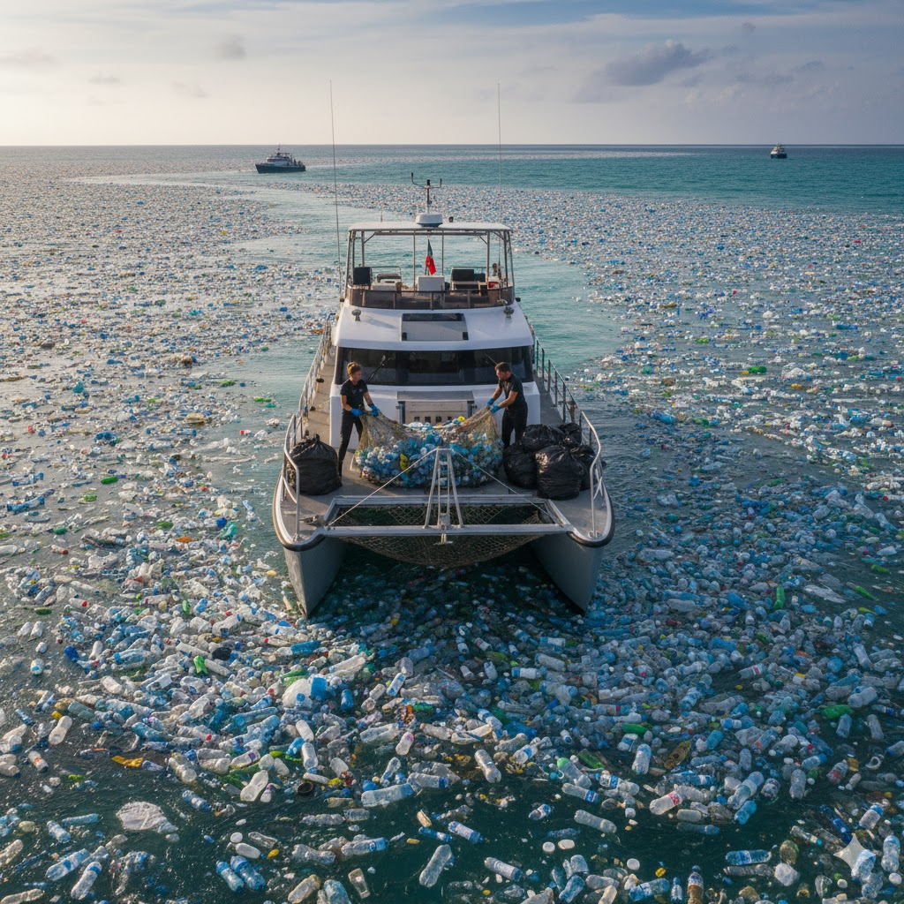

Cuidando de nuestros océanos
Nuestro viaje comienza en los océanos del mundo. Equipos especializados recolectan el plástico desechado mediante programas de limpieza costera y de recuperación marina. Estos materiales son clasificados, limpiados y preparados para su renacimiento. Al dar una nueva vida a estos desechos oceánicos, reducimos la contaminación y protegemos la vida marina, creando así la base de nuestros trajes de baño de lujo, donde la sostenibilidad y el estilo se encuentran en perfecta armonía.